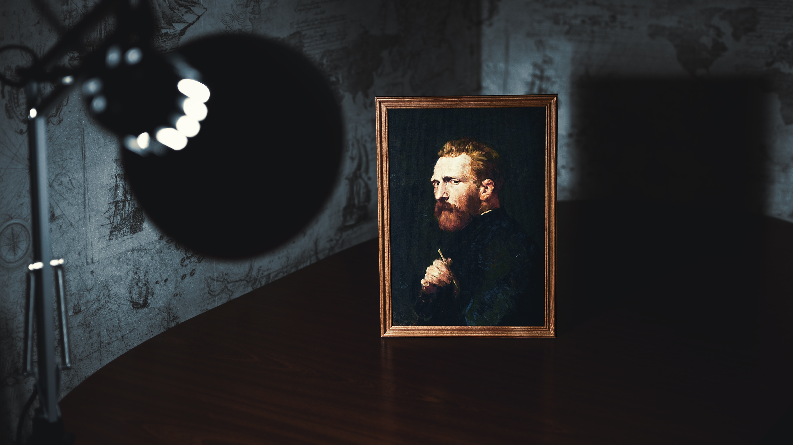

Almond Blossoms is from a group of several paintings made in 1888 and 1890 by Vincent van Gogh in Arles and Saint-Rémy, southern France of blossoming almond trees. Flowering trees were special to van Gogh. They represented awakening and hope.
He enjoyed them aesthetically and found joy in painting flowering trees. The works reflect the influence of Impressionism, Divisionism, and Japanese woodcuts. Almond Blossom was made to celebrate the birth of his nephew and namesake, son of his brother Theo and sister-in-law Jo.